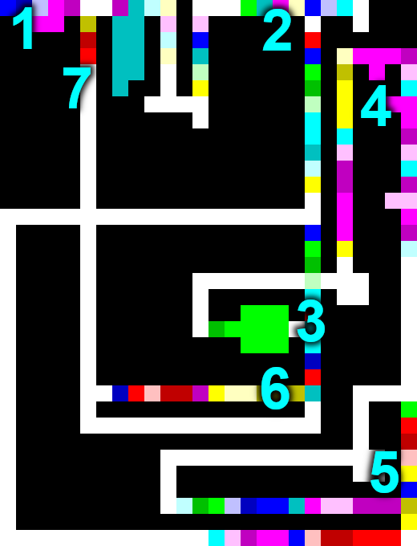

Solving Project Euler with a picture, using Piet
I set an ill-advised goal as part of my plan to write code in 100 programming languages (an ill-advised goal in itself):
Use Piet to solve a nontrivial problem from Project Euler.
(Piet is an esoteric programming language that uses images as code, with pixel count/hue/shade corresponding to instructions for a stack-based virtual machine.)
Summary
I did manage to solve problem 34 using Piet, but it required careful planning and some tedious rewrites repaints.
Here's the solution, enlarged to show texture:
Approach
Problem 34 requires adding up all numbers where the sum of their digits' factorials equals the number itself. I specifically chose this problem because it is fairly simple and doesn't require any special input, but is not so simple that solving it would be trivial.
Given that Piet's instructions are all context-dependent (the color of an instruction depends on the color of the previous block) and it uses a stack for all arithmetic/input/output/manipulation, I made a plan to tackle the "stack" part first (prior to painting anything):
- Solve the problem in Forth (a stack-based language)
- Re-solve the problem in Forth using only Piet's instructions (except for branching, which is done graphically)
- Translate the Forth-based solution into Piet
- Add some colored rectangles (because: art)
Implementation
Forth solution
After a bit of stack-wrangling, I came up with this solution in Forth (which doesn't use any variables):
( Project Euler problem 34, in Forth )
: log dup . ;
: factorial ( n -- n! )
1 swap begin dup 0 > while dup rot * swap 1 - repeat drop ;
: div-mod ( x y -- q r )
over over / rot rot mod ;
: sum-digit-factorials ( n -- sum)
0 swap begin dup 0 > while 10 div-mod factorial rot + swap repeat drop ;
: main-loop ( sum counter -- sum counter )
dup dup sum-digit-factorials = if dup rot + log swap then 1 + ;
: main 0 3 999999 0 do main-loop loop ;
main
Piet-flavored Forth
Next, I modified the Forth code to use Piet's primitives (except for branches, which are mostly implemented graphically). This was done in a few steps:
- Avoid directly using large numbers (since directly pushing N requires painting N pixels)
- Replace
dowith awhileloop - Implement Forth words in Piet, as "macros" (which I will later manually expand when painting the actual Piet image)
Result:
( Project Euler problem 34, in Forth, but using Piet primitives )
( Piet macros )
( : swap 2 1 roll ; )
( : rot 3 2 roll ; )
( : rot2 3 1 roll ; )
( : over2 dup 3 2 roll dup 3 1 roll 4 1 roll ; )
( : = - not ; )
( Implementation using Piet primitives (except for loops, which are graphical in Piet) )
: rot2 rot rot ;
: over2 over over ;
: factorial ( n -- n! )
1 swap begin dup 0 > while dup rot * swap 1 - repeat drop ;
: div-mod ( x y -- q r )
over2 / rot2 mod ;
: sum-digit-factorials ( n -- sum)
0 swap begin dup 0 > while 10 div-mod factorial rot + swap repeat drop ;
: main-loop ( sum counter -- sum counter )
dup dup sum-digit-factorials = if dup rot + swap then 1 + ;
: main 0 3 begin dup 10 10 10 10 10 * * * * - while main-loop repeat drop . ;
main
Using Piet, for real
For authoring the image, I used this browser-based Piet editor (and interpreter).
Translating into Piet was excruciatingly tedious because:
- Opcodes are based on the relative hue/lightness of the previous color block, so correcting a mistake usually entails rewriting the entire rest of the chunk (unless you separate everything with ugly white blocks)
- There is no way to add comments to your code (other than maybe screenshotting a scaled up image and writing on it)
- Branches are represented graphically and you have to ensure there is space for e.g. return lines (all using Zoolander-style clockwise-only turns)
Luckily, I only had to correct a handful of mistakes.
Here's what my solution looked like (with points of interest marked):

Explanation:
- Start (
mainin the Forth code above) - Test for "checked enough numbers to be done" (the program ends near the upper-right; otherwise, run
main-loop) - Check for any digits left in the current number (the loop in
sum-digit-factorials) - Compute quotient and remainder (i.e. extract a digit--still in
sum-digit-factorials) - Compute factorial of digit (
factorial) - Check if sum of digit factorials equals the number (the
ifpart ofmain-loop) - Move on to the next number
N.B. I set the limit (#2) lower for the Piet version just to ensure the program ran in a reasonable amount of time. It still produces the correct answer, but I don't have any mathematical analysis to justify lowering the limit from 7 digits down to 5.
Art
Given that Piet code is an image, the final step is to add prettily colored rectangles. Here is the final unscaled solution (which you can theoretically run via a Piet interpreter):

Final thoughts
Overall, once I had a Forth-simple solution with a minimum of stack manipulation, translating it into Piet was straight-forward (although I shudder to think about graphically arranging a more complicated Piet program).
But the satisfaction of having written a real program in a 2D esoteric language like Piet is real.
How often can you sit back and visually admire a program? Piet is a wonderfully unique entry in the world of esoteric programming languages!
Appendix
To my amazement, someone created a Piet assembler that can translate from an assembly language into a Piet-compatible image. It's an incredible achievement, but I wanted to write my Piet solution by hand.